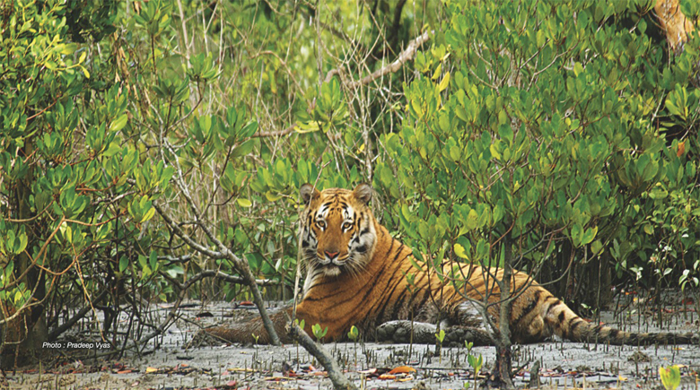

The Sunderbans

The Sundarbans National Park is a national park, tiger reserve and biosphere reserve in West Bengal, India. It
is part of the Sundarbans on the Ganges Delta and adjacent to the Sundarban Reserve Forest in Bangladesh. It is
located to south-west of the Bangladesh. The delta is densely covered by mangrove forests, and is one of the
largest reserves for the Bengal tiger. It is also home to a variety of bird, reptile and invertebrate species,
including the salt-water crocodile. The present Sundarban National Park was declared as the core area of
Sundarban Tiger Reserve in 1973 and a wildlife sanctuary in 1977. On 4 May 1984 it was declared a national park.
It is a UNESCO World Heritage Site inscribed in 1987, and it has been designated as a Ramsar site since 2019. It
is considered as a World Network of Biosphere Reserve (Man and Biosphere Reserve) from 1989.
Despite these protections, the Indian Sundarbans were considered endangered in a 2020 assessment under the IUCN
Red List of Ecosystems framework.[5] The Sundarbans mangrove forest covers an area of about 10,000 km2 (3,900 sq
mi), of which forests in Bangladesh's Khulna Division extend over 6,517 km2 (2,516 sq mi) and in West Bengal,
they extend over 3,483 km2 (1,345 sq mi) across the South 24 Parganas and North 24 Parganas districts.[6] The
most abundant tree species are sundri (Heritiera fomes) and gewa (Excoecaria agallocha). The forests provide
habitat to 453 fauna wildlife, including 290 bird, 120 fish, 42 mammal, 35 reptile and eight amphibian
species.[7] Despite a total ban on all killing or capture of wildlife other than fish and some invertebrates,
there is a consistent pattern of depleted biodiversity or loss of species in the 20th century, and the
ecological quality of the forest is declining